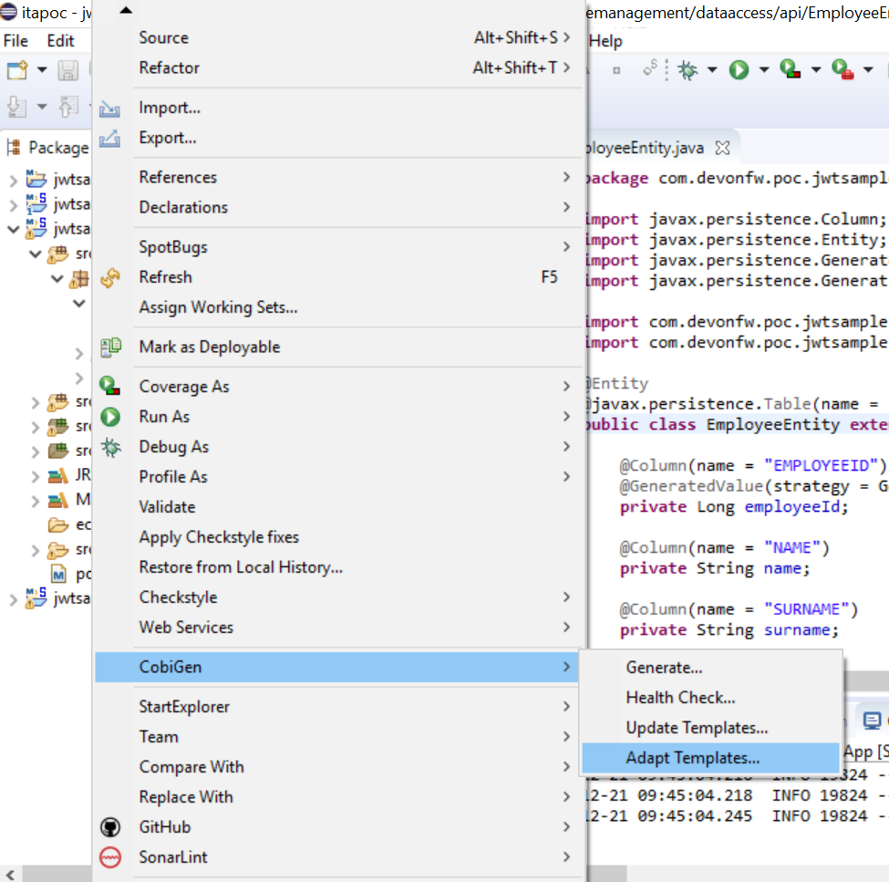

Adapt Templates from Cobigen
Adapt CobiGen_Templates
After following this tutorial, you will have the CobiGen_Templates downloaded on your local machine. To import these templates you need to do the following:
Right click in any part of the package explorer, then click on CobiGen → Adapt templates

Click Ok:

Now the CobiGen_Templates project will be automatically imported into your workspace, as shown on the image below:


Now you just need to change the Java version of the project to JRE 1.8. Right click on the JRE system library, and then on Properties:

Now change the version to Java 1.8

Now you have successfully imported the CobiGen templates. If you want to edit them, you will find them in the folder src/main/templates. For instance, the Java templates are located here:

Now you can adapt the templates as much as you want. Documentation about this can be found on:
https://github.com/devonfw/tools-cobigen/wiki/Guide-to-the-Reader